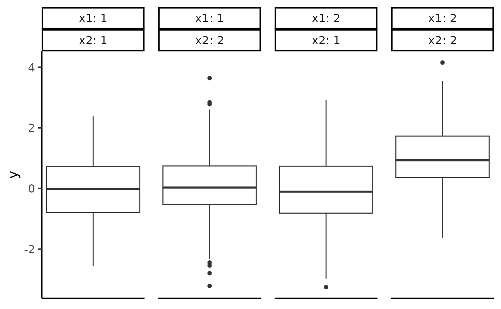

Introduction to ANOVABNPTestR
getting_started.Rmd
library(ggplot2)
library(ANOVABNPTestR)
# Remember: you must call ANOVABNPTestR::setup() at least one timeTo explore the basic capabilities of ANOVABNPTestR,
we’ll use the simulated dataset example_01. This dataset
contains 1.000 registers, a continuous response (y) and 2
factors (x1 and x2), with
x1 == x2 == 1 representing the control group.
First, let us plot a boxplot of y for each combination
of x1 and x2:
data <- ANOVABNPTestR::example_01
data |>
ggplot2::ggplot(ggplot2::aes(y = y)) +
ggplot2::geom_boxplot() +
ggplot2::facet_wrap(
nrow = 1,
ggplot2::vars(x1, x2),
labeller = "label_both"
) +
ggplot2::theme_classic(base_size = 15) +
ggplot2::theme(
panel.spacing = ggplot2::unit(1, "lines"),
axis.title.x = ggplot2::element_blank(),
axis.ticks.x = ggplot2::element_blank(),
axis.text.x = ggplot2::element_blank()
)
This plot suggests that the only different cell is the one with
x1 == x2 == 2. However, without a formal test, we cannot be
sure. ANOVABNPTestR solves this issue using a BNP
model.
Fitting the model
First, we must fit the model. As our responses take values on the
real line, we can use anova_bnp_normal() (see
anova_bnp_berpoi() for counts and
anova_bnp_bernoulli() for Boolean variables):
yvec <- example_01[[c("y")]]
Xmat <- example_01[, c("x1", "x2")] |> as.matrix()
my_fit <- ANOVABNPTestR::anova_bnp_normal(yvec, Xmat)